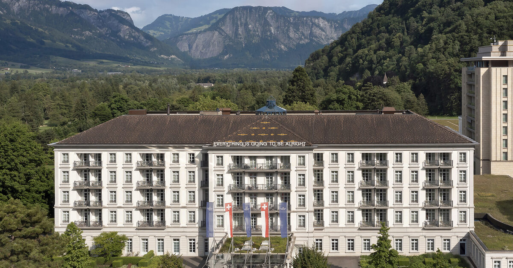

FRIDAY · SATURDAY · SUNDAY · LATE MAY 2026 · ST. GALLEN · SWITZERLAND
Rhine valley floorSnow-line · ~1 800 mLiechtenstein
The dinner is the spine. Memories serves Wed–Sat from 19:00 in a single seating, the pairing menus push the meal well past 22:30, and the kitchen closes around 21:30[1][2] — every other decision falls into place once you fix the night-of geometry: walk home, or accept a 5–25-minute taxi back to wherever you're sleeping.

— the Quellenhof, Saturday at dusk —
SATURDAY · 19:00
One seating. One kitchen. One reservation that fixes everything.
Memories sits inside the Grand Hotel Quellenhof, down a hallway from the room. Sven Wassmer cooks an Alpine-research menu — local fish, foraged herbs, the mineral library of the Rheintal — paired through a single 19:00 seating that runs three to four hours.[1]
SERVICE
Wed – Sat
SEATING
single · 19:00
KITCHEN OFF
~21:30
FORMAT
pairing menu
FINISH
past 22:30
INCLUSIVE
direct rates only
A FORK IN THE ROAD
Two coherent philosophies, not a spectrum.
walk hometaxi from a wine village
PATH A · THE THERMAL ARC
Sleep where you eat.
— path of least friction —
★★★★★ RESORT
Grand Hotel Quellenhofdown the hallway from Memories; inclusive thermal & transfer attach to direct rate[1]
0 min
★★★★★ 14 KEYS
Palais (Relais & Châteaux)the campus's intimate tier, same Quellenhof block[1]
0 min
★★★★ VILLAGE
Sorell Taminathe only non-resort walk-home; reliable, unfussy[3]
~3 min
★★★ SELF CHECK-IN
Ochsen · Krone · Esos Quellebudget cluster in Bad Ragaz village — fine if all you need is a bed
The hairline canyon that gives the resort its 36.5 °C water. Walk up to the Old Bath at Pfäfers, then soak the same spring back down at the therme.[14]
Is this a resort weekend with Memories as the apex of a thermal-water arc,
or a Bündner Herrschaft weekend with Memories as the formal evening inside a wine-village stay?
— two answers · two hotels · two reservation calls —
BAD RAGAZ · WEEKEND DOSSIER · 2026EXPEDITION · 113 CITATIONS · 24 MIN READ↩ canonical